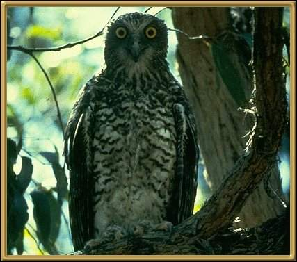

A pair of these owls live in the valley behind our home, where they breed each year - they seem to mate for life. Their call is quite startling, and they are considered rare. 60-66cm (23.5 - 26 inches)
Photographer: Unknown